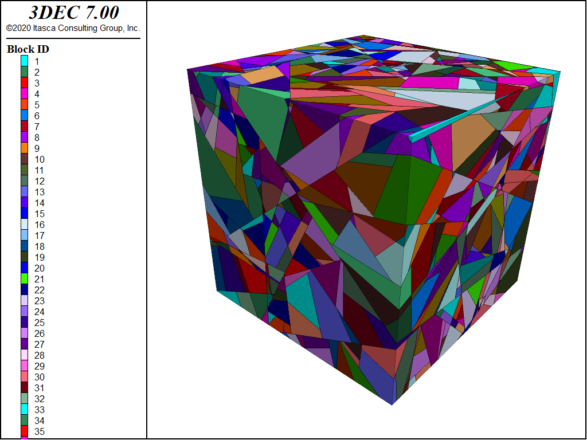

块体质量指标
运行 3DEC 模型时出现的大多数问题，都源于不良的块体几何形状。3DEC 可以按任意角度、任意尺寸切割块体，这是一项非常强大的功能。然而，这也可能创建出很薄或很小的块体。在发生变形（大应变模式）且块体开始坍塌时，这些块体可能造成问题，并出现“负体积网格单元（negative volume zone）”或“面法向异常（bad face normal）”等错误信息。
处理这些问题的第一步是识别不良块体。下列几种范围（ranges）有助于定位不良块体。
range volume 浮点值下限（fl） 浮点值上限（fu）
此范围选择体积位于指定下限和上限之间的块体，可用于识别很小的块体。
range edge-length 浮点值下限（fl） 浮点值上限（fu）
此范围选择最短边长位于指定上限和下限之间的块体，有助于识别体积未必小、但某些边非常短的块体；短边会使这些块体难以划分网格。
range aspect-ratio 浮点值下限（fl） 浮点值上限（fu）
此范围选择最大长宽比位于指定上限和下限之间的块体。长宽比定义为最长边长除以体积的立方根。一般而言，长宽比高（> 10）的块体难以划分网格，并可能在变形时引发数值问题。有时可以切割这些细长块体，形成由较短块体组成、长宽比更好的集合。
range face-area 浮点值下限（fl） 浮点值上限（fu）
此范围选择最小面面积位于指定上限和下限之间的块体。与边长范围类似，它有助于识别尺寸未必小、但某些面非常小的块体。
range concave
此范围选择凹块体。3DEC 的某些切割操作可能产生轻微凹陷的块体。这些块体通常仍可划分网格，并通常仍能正常计算。不过，对于凹面，接触检测和力计算可能不够准确。
下面给出使用这些范围的示例。先创建离散裂隙网络（DFN），再用它切割大块体。这会产生一些几何形状不良的块体。
model new
model random 10000
model domain extent -50 50 -50 50 -50 50
; -- 生成 DFN --
fracture template create 'dfn_template' size power-law 3 size-limits 1 100
fracture generate template 'dfn_template' dfn '99' mass-density 0.1
; 创建块体
block tolerance 0.001
block create brick -20 20 -20 20 -20 20
block cut dfn name '99'
;
; --- 查找并分组不良块体 ---
;
block group 'bad_face' slot '1' range face-area 0 0.0001
block group 'bad_edge' slot '2' range edge-length 0 0.005
block group 'bad_aspect' slot '3' range aspect-ratio 10 1000
block group 'bad_volume' slot '4' range volume 0 0.001


图 1：识别几何形状不良的块体。
理想情况下，应采用能够避免产生这些不良块体的切割方式。如果无法做到，则可使用此处的方法识别不良块体。识别后，若采用大应变模式，通常可以删除几何形状不良的块体。不建议在小应变模式下这样做，因为会在模型中留下无法闭合的空隙。如果不良块体能成功划分网格，可将其设为弹性，以防止虚假的塑性变形。如果无法划分网格，则可以让它们保持刚性。
| 这些内容对您有帮助吗？… | FLAC3D © 2019, Itasca | 原文更新于 2020 年 10 月 8 日 |